The Fair Trade Supply Chain Tracker is a relational database application designed to bring transparency to the journey a product takes from the farm to the final retail shelf. Modern consumers increasingly want to verify that the food they eat or the clothes they wear have been produced under fair labour and ethical sourcing conditions, but most existing supply chains are fragmented and rely on paper based certification records that are easy to forge and difficult to audit. Our project addresses this problem by modelling the entire supply chain inside PostgreSQL, so that every stakeholder, every product batch, every ownership transfer, and every certification can be tracked, validated, and queried in a consistent way.
The system is built around five normalized tables and enforces three categories of rules directly in the database: certification validation on batch creation and transfer, immutable audit logging for every change, and a directed acyclic graph model for batch lineage that supports both splitting and merging of material through processing stages. Recursive Common Table Expressions make it possible to trace any final retail batch backward to its raw origin, or forward from any farm to every downstream product it reached. Triggers block batch creation by uncertified, expired, or revoked stakeholders before the row is ever written, which means the database itself refuses to store non-compliant data rather than depending on the application layer to do so.
The project is implemented with PostgreSQL 16, PL/pgSQL triggers and stored functions, and Python with psycopg2 and Graphviz for the visualisation and reporting layer. The result is a self-auditing database that models a realistic three chain supply network covering coffee, cocoa, and cotton products across eighteen stakeholders and twenty four tracked batches.
The primary goal of this project is to design a well structured, fully normalized relational database that can track product batches through every stage of a Fair Trade supply chain and enforce ethical compliance rules automatically. The specific functional objectives of the application are listed below.
The project scope is deliberately kept to the database layer and a lightweight Python reporting shell. The following items are within scope.
The following are explicitly outside scope and are left as reasonable extensions for future work.
After analysing how products and certifications move through a Fair Trade supply chain, five core entities were identified.
| Entity | Role in the System | Primary Key |
|---|---|---|
| Stakeholder | Any participant in the chain: farmer, processor, distributor, or retailer. | id |
| Certification | The Fair Trade certification record belonging to a stakeholder, including issue date, expiry date, and active status. | id |
| Batch | A specific lot of product owned at some point by a stakeholder. Has a current owner and a quantity. | id |
| Batch Relation | A parent to child link that records the fact that a new batch was produced from one or more earlier batches. This is the associative entity for the many to many relationship between batches. | (parent_batch_id, child_batch_id) |
| Audit Log | An append only record of every action taken on a batch (creation, update, transfer). | id |
batch_relations). A child batch can be produced from multiple parent batches (merging) and a parent batch can flow into multiple child batches (splitting). This is the directed acyclic graph that gives the system its lineage capability.To justify the final schema, the design is walked through the usual normalization steps starting from a single wide unnormalized table. This is the table a beginner might sketch first: one row per stakeholder with every related piece of information packed in.
This table is not even in First Normal Form. Several attributes contain comma separated lists, and a single row mixes information about a stakeholder, their certification, every batch they own, every parent to child lineage link in which they are involved, and every audit event.
1NF requires that every column holds a single atomic value and that there are no repeating groups. Each repeating group is moved into its own table, keyed against the stakeholder.
The schema now satisfies 1NF. Every attribute is atomic and there are no multi valued fields.
2NF requires 1NF plus the removal of partial dependencies on a composite primary key. The only composite key in the schema is batch_relations(parent_batch_id, child_batch_id). Since this table has no non key attributes at all, there can be no partial dependency to violate 2NF. Every other table uses a single column surrogate key, so 2NF is automatically satisfied for those as well.
3NF requires 2NF plus the elimination of transitive dependencies, meaning no non key attribute may depend on another non key attribute. Examining stakeholders in its 1NF form exposes a violation.
The fix is to split the certification attributes into a dedicated table keyed on its own id, linked back to stakeholders through a foreign key.
After this decomposition the schema is in 3NF. Every non key attribute in every table now depends only on the primary key of that table.
BCNF strengthens 3NF by requiring that, for every non trivial functional dependency X -> Y, the left hand side X must be a superkey. Each table is checked below.
| Table | Non trivial FDs | LHS is superkey? | BCNF? |
|---|---|---|---|
stakeholders | id → name, role, created_at | Yes (id is the primary key) | Yes |
certifications | id → stakeholder_id, certifying_body, issue_date, expiry_date, is_active | Yes | Yes |
batches | id → product_name, quantity, unit, current_owner_id, created_at | Yes | Yes |
batch_relations | None (all attributes form the key) | Trivially yes | Yes |
audit_log | id → batch_id, action, actor_id, timestamp | Yes | Yes |
Every functional dependency in the final schema has the primary key on its left side, so the design is in BCNF. This eliminates update, insert, and delete anomalies: a certification can be revoked without touching any stakeholder row, a new batch can be added without duplicating owner information, and no lineage fact is recorded in more than one place.
The ER diagram below was generated directly from the live PostgreSQL catalog using a Python script that introspects information_schema. This guarantees that the diagram reflects exactly what has been created in the database, rather than being a drifted hand drawn sketch.
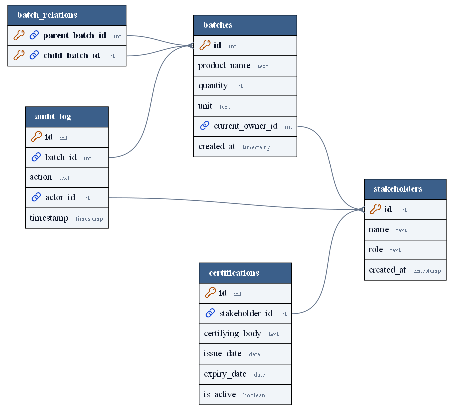
stakeholders (1) to (0..1) certifications. A stakeholder may optionally hold a certification, and each certification belongs to exactly one stakeholder. The optionality is important because it makes it possible to model an uncertified stakeholder like our seed data id 17.stakeholders (1) to (0..N) batches. A stakeholder can currently own many batches, while each batch has one current owner.stakeholders (1) to (0..N) audit_log. A stakeholder can be the actor on many audit entries, while every audit entry names exactly one actor.batches (M) to (N) batches, resolved through batch_relations. A batch can have many parents and many children. This many to many self relationship is what lets the schema model splits and merges inside processing stages.batches (1) to (0..N) audit_log. Each batch can have many audit entries attached over its lifetime, and every audit entry belongs to exactly one batch.
Modelling batch_relations as a separate junction table rather than as a self referencing foreign key on batches is a deliberate design choice. A self referencing column would have forced every batch to have at most one parent, which would rule out merges. The junction table lets two parent batches (for example, Cocoa Raw A and Cocoa Raw B) be combined at a processor into a single child batch, which is a routine event in real supply chains. The trade off is that lineage queries must be expressed recursively across the junction table, which is handled by the recursive CTEs in the stored functions.
This section walks through the application in action. Every figure shown below was captured from the live HTML run report produced by generate_report.py, which connects to the populated database, runs each scenario end to end, and renders the results. The figures are organised by subsystem.
The first screen of the run report enumerates every object created by setup/setup.sql. The installation builds five base tables, five triggers, six views, and four non trigger stored functions. The trigger bodies (check_certification, log_batch_insert, and so on) are hidden from the function list because they are not meant to be called directly.
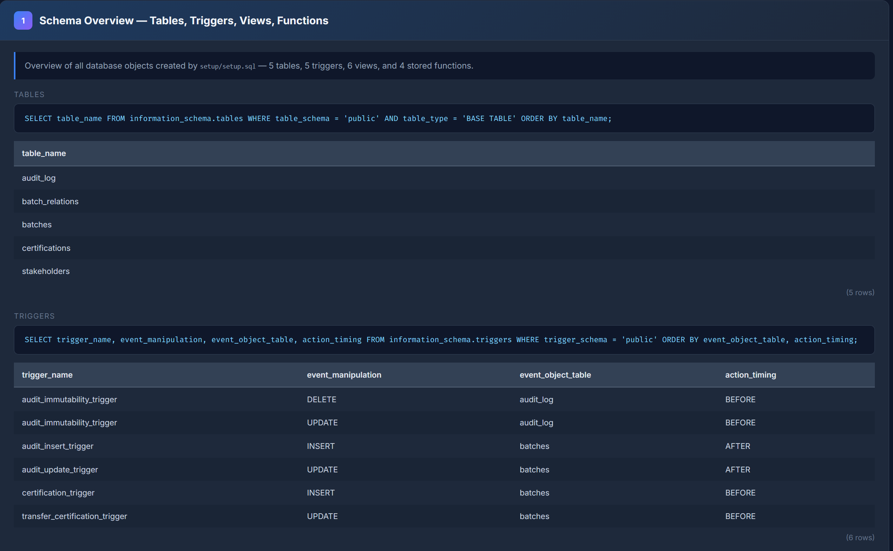
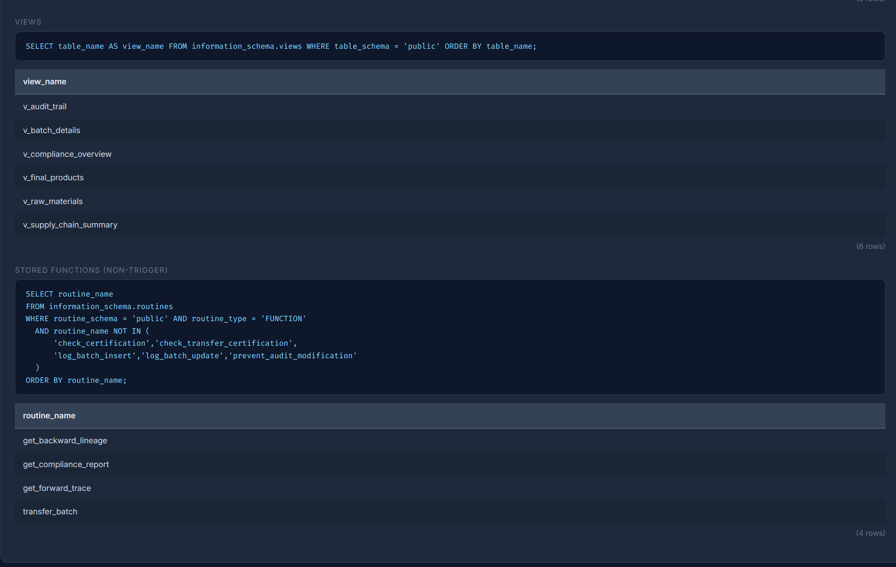
v_compliance_overview and get_compliance_report() deliberately share a result shape so they are interchangeable.The database is populated with eighteen stakeholders spread across three supply chains (coffee, cocoa, and cotton) plus three edge case stakeholders that are essential for exercising every branch of the compliance logic: id 16 holds an expired certification, id 17 holds no certification at all, and id 18 holds a revoked certification. Keeping the certification attributes in a separate table is what makes this possible, because the stakeholder row is identical for all three edge cases and only the certification row differs.
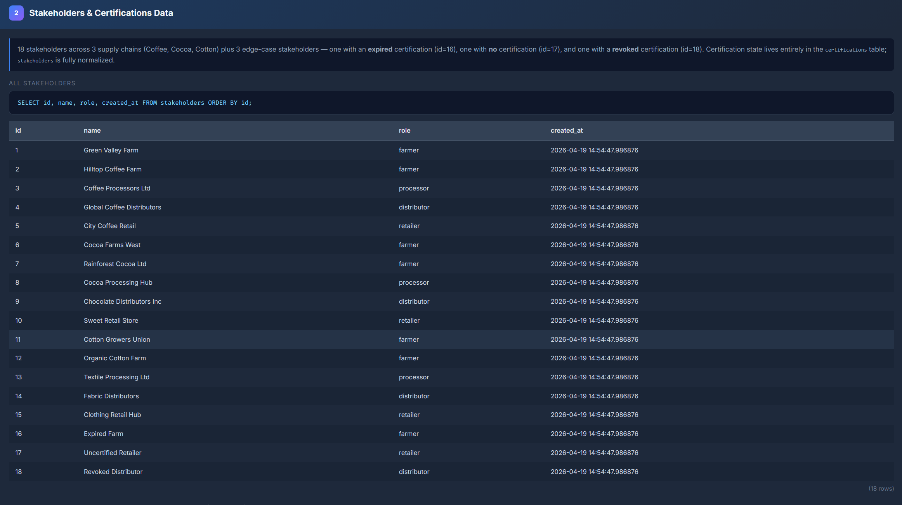
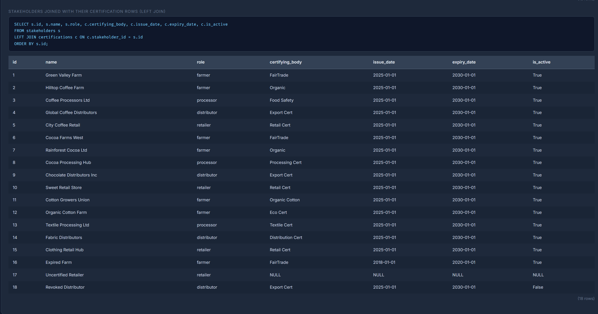
is_active = False on id 18 are clearly visible.
Twenty four batches span the three chains. Each batch records its product name, quantity, unit, and the stakeholder currently in custody of it. The batch_relations table captures how each batch was produced from its parents, forming the directed acyclic graph that drives all lineage queries.
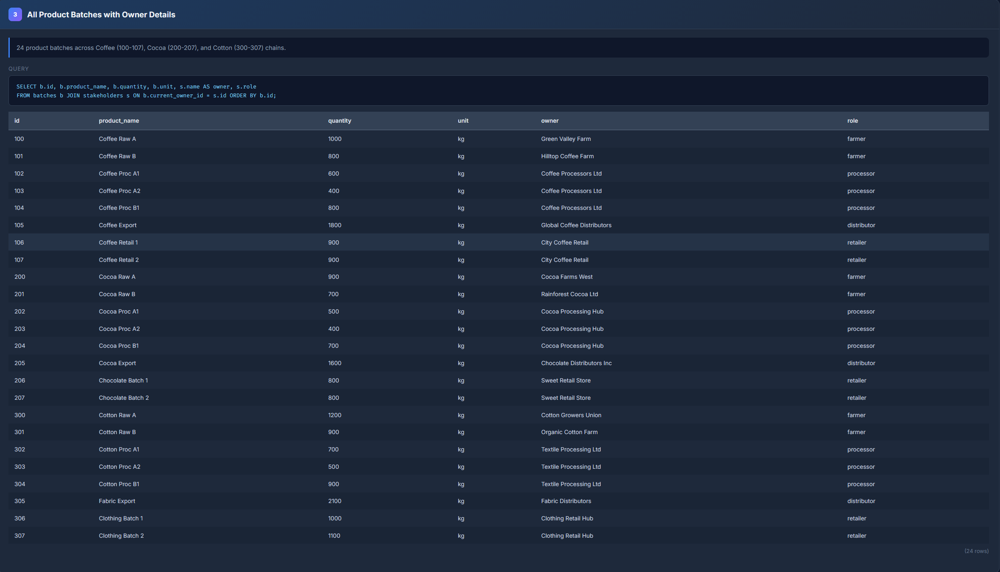
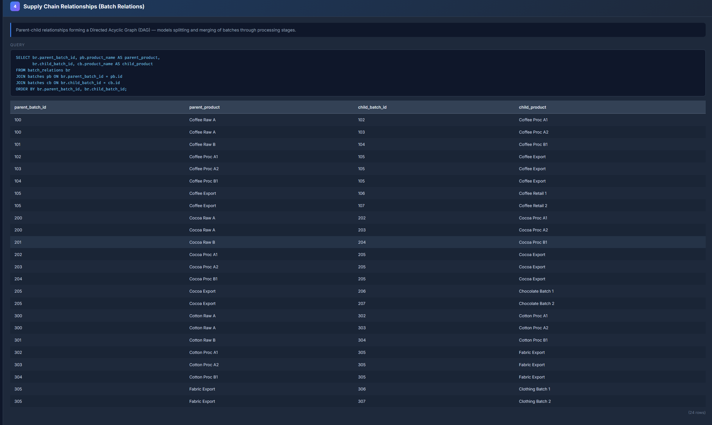
The core value of the database lies in its lineage queries. Given any batch, the backward trace walks through every ancestor up to the raw material origin, and the forward trace walks through every descendant to the final retail product. Both are implemented with a PostgreSQL recursive CTE that joins batch_relations back onto itself.
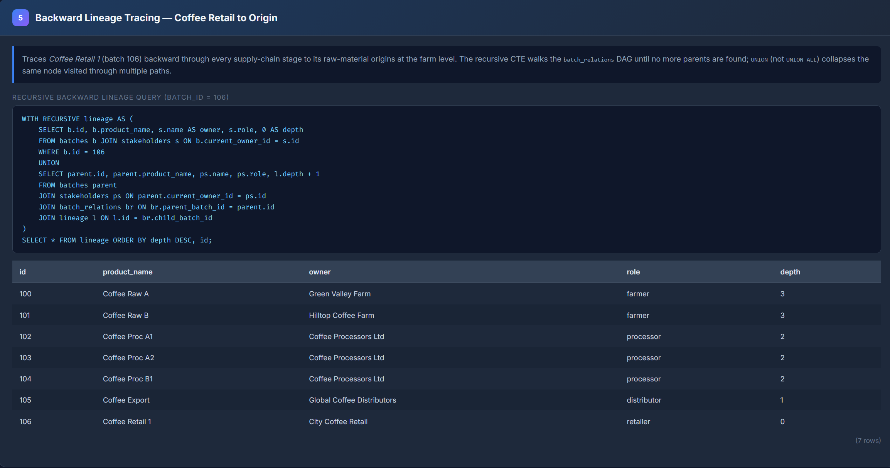
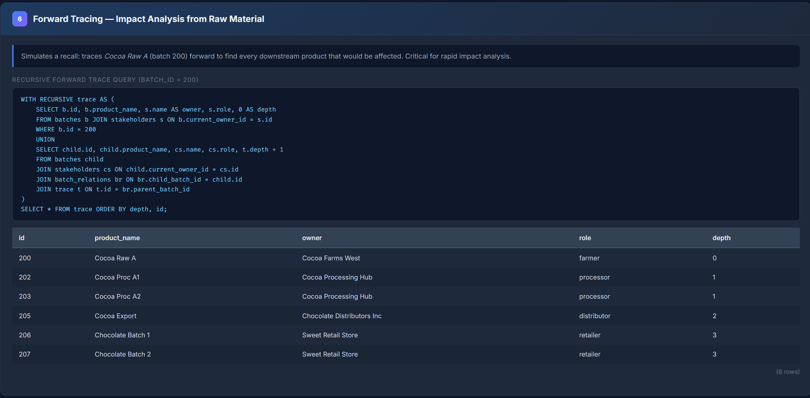
Four separate scenarios verify that the two certification triggers reject every non-compliant action. In each case the database returns an error and the row is never written. The application client cannot bypass these checks because they execute inside the database engine.
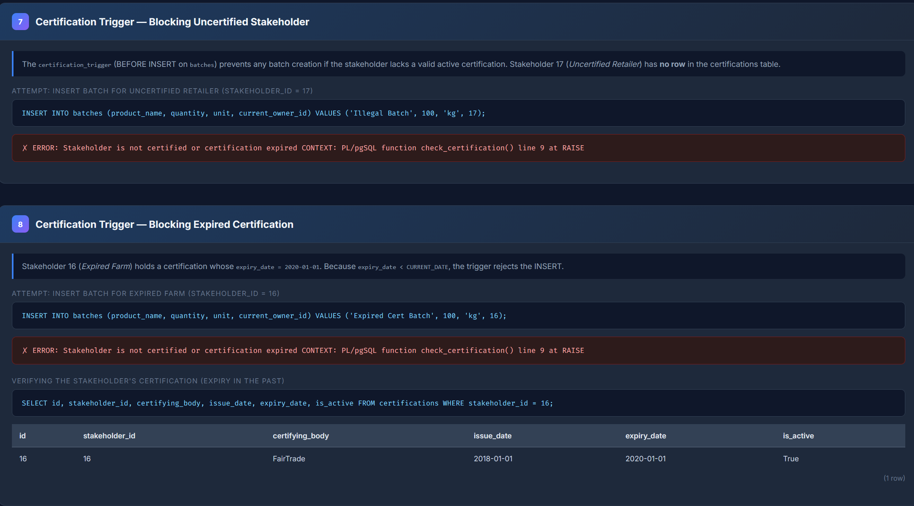
check_certification().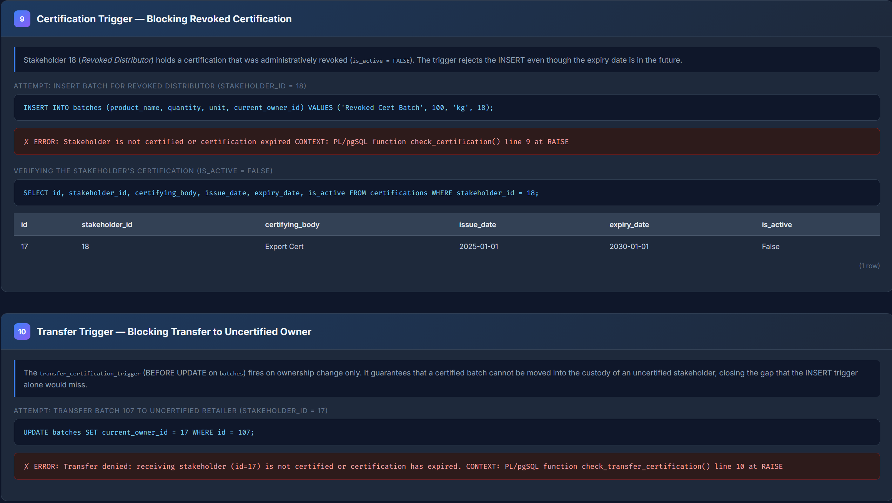
is_active = FALSE. Bottom: attempt to transfer an existing batch to uncertified stakeholder 17; the second trigger check_transfer_certification() fires on UPDATE of current_owner_id and blocks the move.
A successful transfer is performed through the transfer_batch(batch_id, new_owner_id) stored function. The function updates the ownership column, the transfer trigger validates the receiving stakeholder, and the audit trigger records the event automatically. The audit log then becomes the canonical record of who held the batch and when.
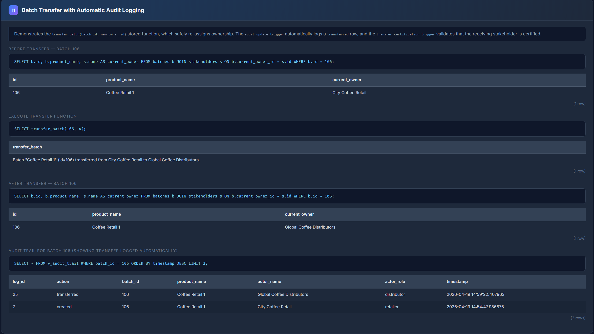
transferred written by the trigger with no application assistance.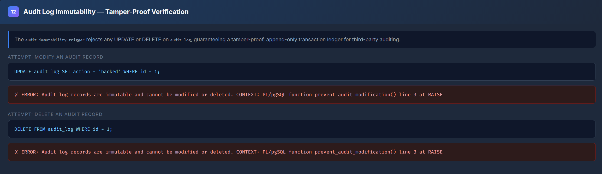
audit_log are rejected by prevent_audit_modification(), guaranteeing an append only history.The database exposes six views that pre-compose common queries. Three of the most important are shown below: the full compliance overview, the per chain summary, and the final products and raw materials views used for recall and provenance queries respectively.
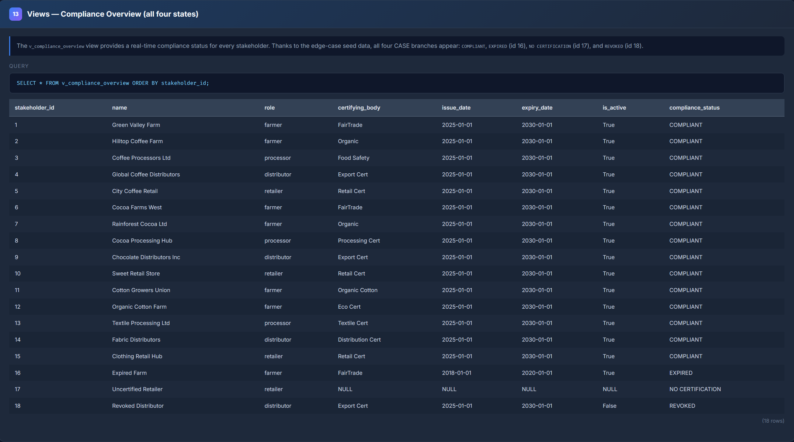
v_compliance_overview classifies every stakeholder into one of four states. Thanks to the edge case seed data, all four CASE branches are reached: COMPLIANT (rows 1 to 15), EXPIRED (row 16), NO CERTIFICATION (row 17), and REVOKED (row 18).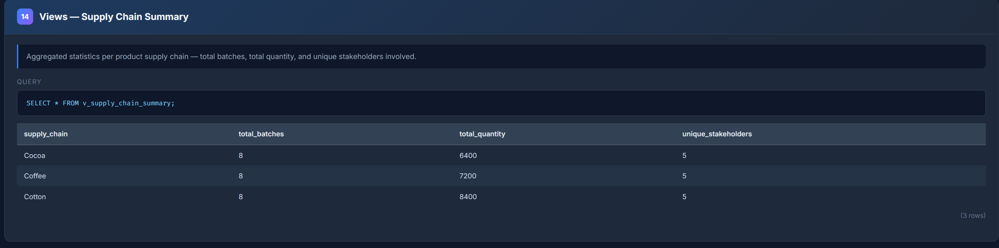
v_supply_chain_summary aggregates per chain: eight batches, five stakeholders, and a total quantity that reflects the in-transit material in each of the three chains.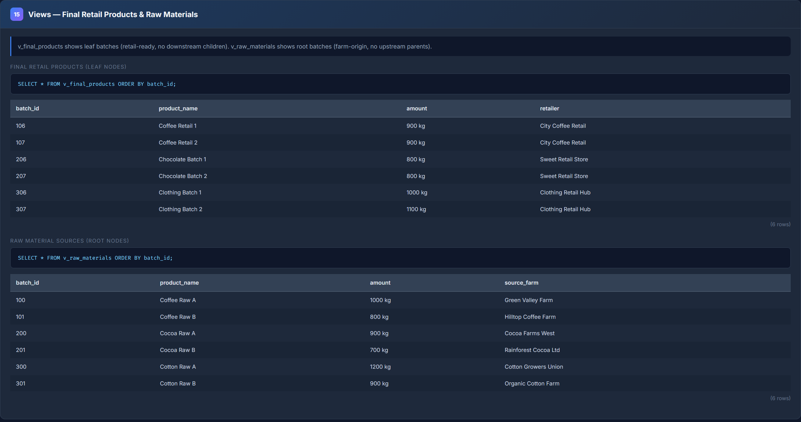
v_final_products (top) lists the leaf batches that have no downstream children, and v_raw_materials (bottom) lists the root batches that have no upstream parents. Together they bound the DAG.The three reusable lineage and compliance functions let client applications call a single routine instead of rewriting the recursive CTEs each time.
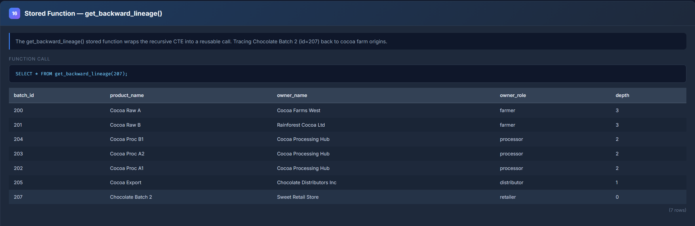
get_backward_lineage(207) wraps the recursive CTE used in Figure 8 into a callable function. Here it traces Chocolate Batch 2 back to both cocoa farm origins.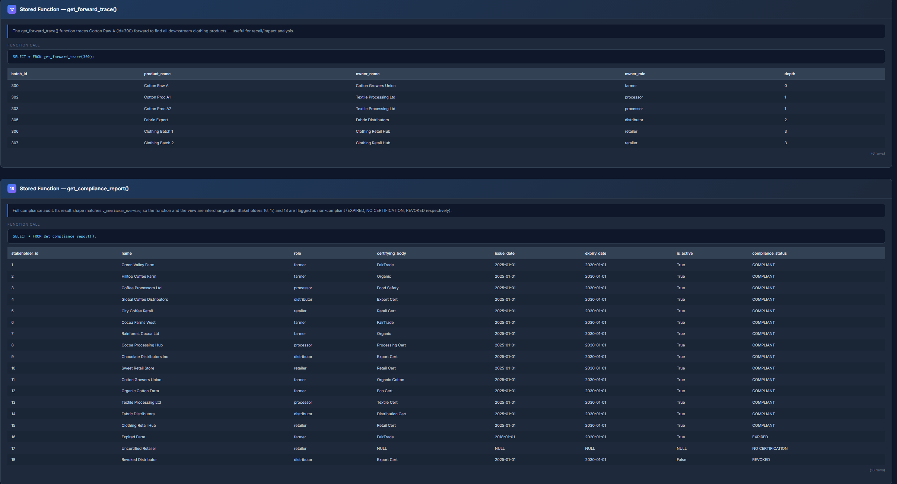
get_forward_trace(300) traces Cotton Raw A forward to every downstream fabric and clothing product. Bottom: get_compliance_report() returns the same result set as v_compliance_overview, confirming that the view and the function are interchangeable.Aggregate queries exercise GROUP BY, HAVING, and a second independent recursive CTE that computes the maximum depth of each chain from its root. These demonstrate that the schema supports realistic analytical workloads in addition to the lineage queries.
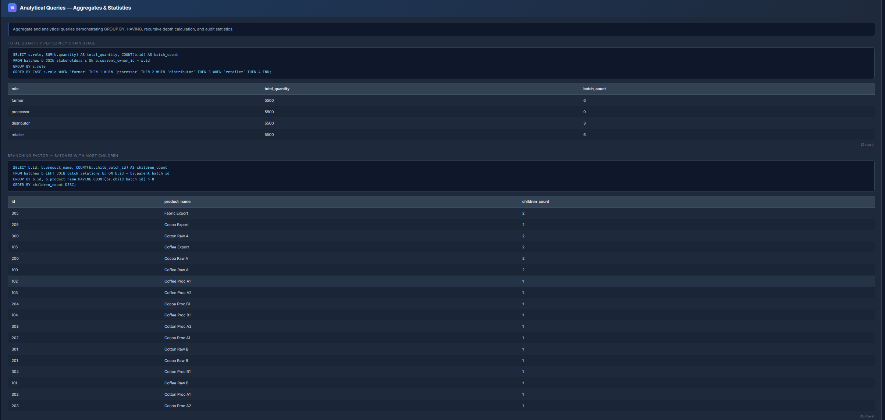
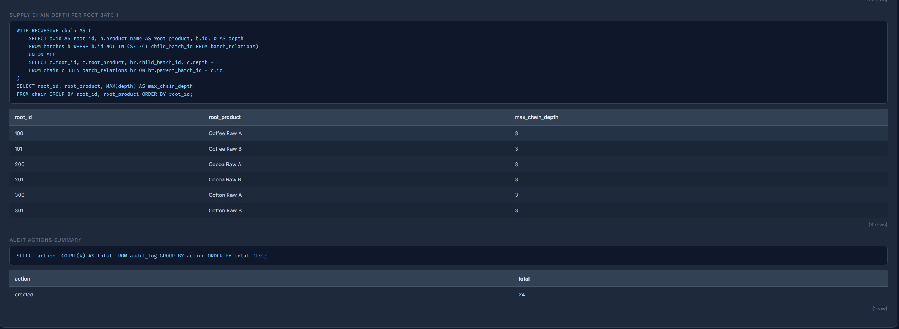
The final visualisation is generated by visualise/visualise_db.py, which reads the current state of the database and emits a Graphviz rendering of the entire DAG. Node colours follow stakeholder role, making the four supply chain stages visually distinct.
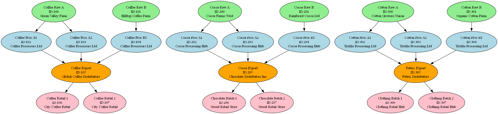
All functional objectives defined in Section 2 have been met. The triggers block every non-compliant insert and every non-compliant transfer; the audit log is strictly append only; the recursive functions correctly return the ancestors and descendants for every tested batch; the compliance view returns all four categorical states; and the Python reporting layer produces a complete run report together with the live ER diagram and the supply chain DAG. The schema is in BCNF, which removes update, insert, and delete anomalies from the design.